Nawigacja
Czym są Złote Maliny?
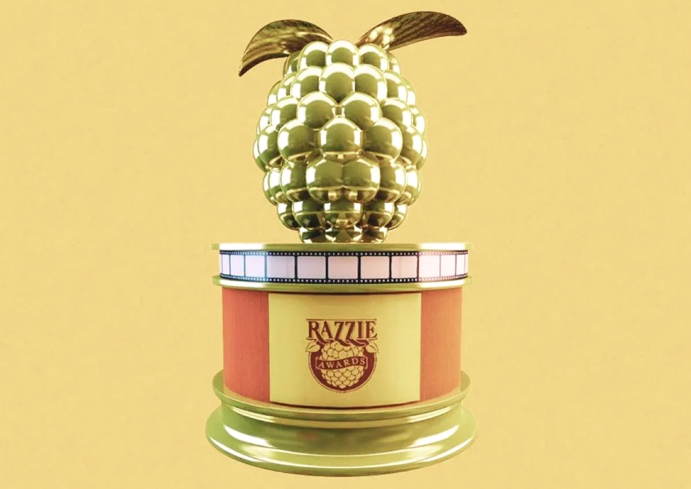Źródło: "Golden Raspberry Awards"
Złote Maliny to pewnego rodzaju anty Oscary, nagrody przyznawane osobom z branży filmowej za najgorsze produkcje i występy w filmach. Ich celem jest pokazanie, że Hollywood czasem wypuszcza filmy tak słabe, że aż zasługują na medal... w postaci uroczo tandetnej plastikowej maliny. Innymi słowy: honorują kino, które nie wyszło, choć miało wyjść fenomenalnie.
Obecnie zobowiązujące kategorie Złotych Malin:
- Najgorszy film
- Najgorszy reżyser
- Najgorszy aktor
- Najgorsza aktorka
- Najgorszy aktor drugoplanowy
- Najgorsza aktorka drugoplanowa
- Najgorsze combo
- Najgorszy scenariusz
- Najgorszy prequel, remake, "zrzynka" lub sequel
- Nagroda Odkupienia
Kategorie Złotych Malin, które już nie zobowiązują
| Tytuł nagrody | Lata w których obowiązywała |
|---|---|
| "Najgorszy oryginalny utwór muzyczny" | 1980-1999 oraz 2002 |
| "Najgorszy debiut" | 1981-1998, z wyjątkiem 1989 |
| "Najgorsza ścieżka dźwiękowa" | 1981-1985 |
| "Najgorsze efektyy wizualne" | 1986-1987 |
| "Najgorsza ekranowa para" | 1994-2009 oraz 2011-2012 |
| "Najgorsza obsada ekranowa" | 2011-2012 |
| W 2010 roku istniała również kategoria łącząca dwie ostatnie: "Najgorsza ekranowa para/obsada" |
Osobistości, które otrzymały największą ilość Złotych Malin (stan na 2025 rok):
- Sylvester Stallone (12 nagród)
- Adam Sandler (9 nagród)
- Madonna (9 nagród)
- Kevin Costner (6 nagród)
- Eddie Murphy(6 nagród)
Galeria
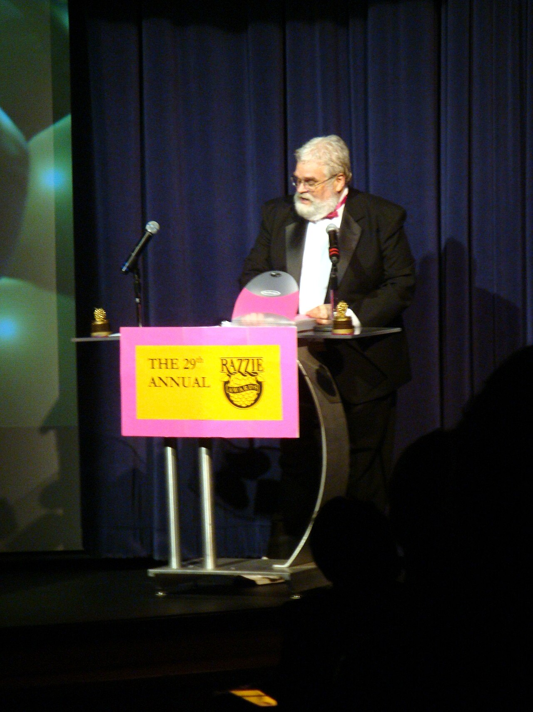
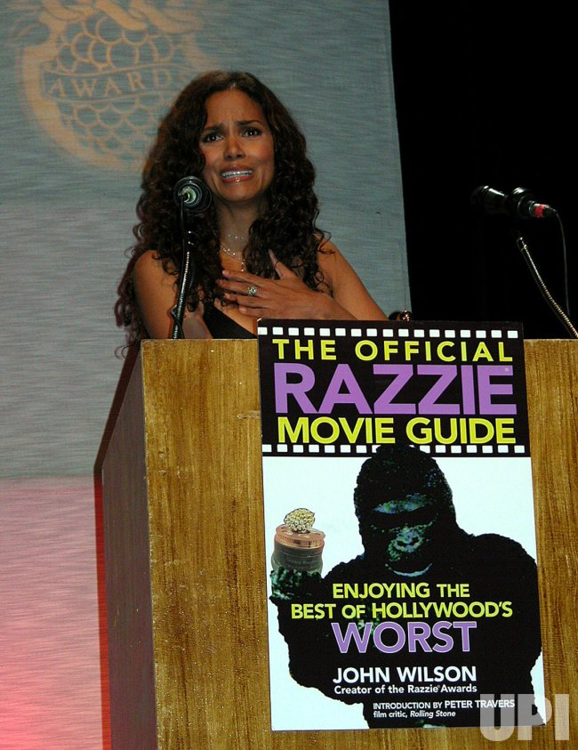
 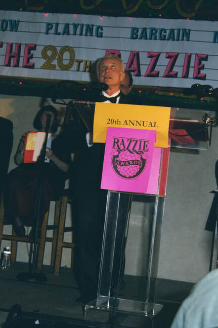
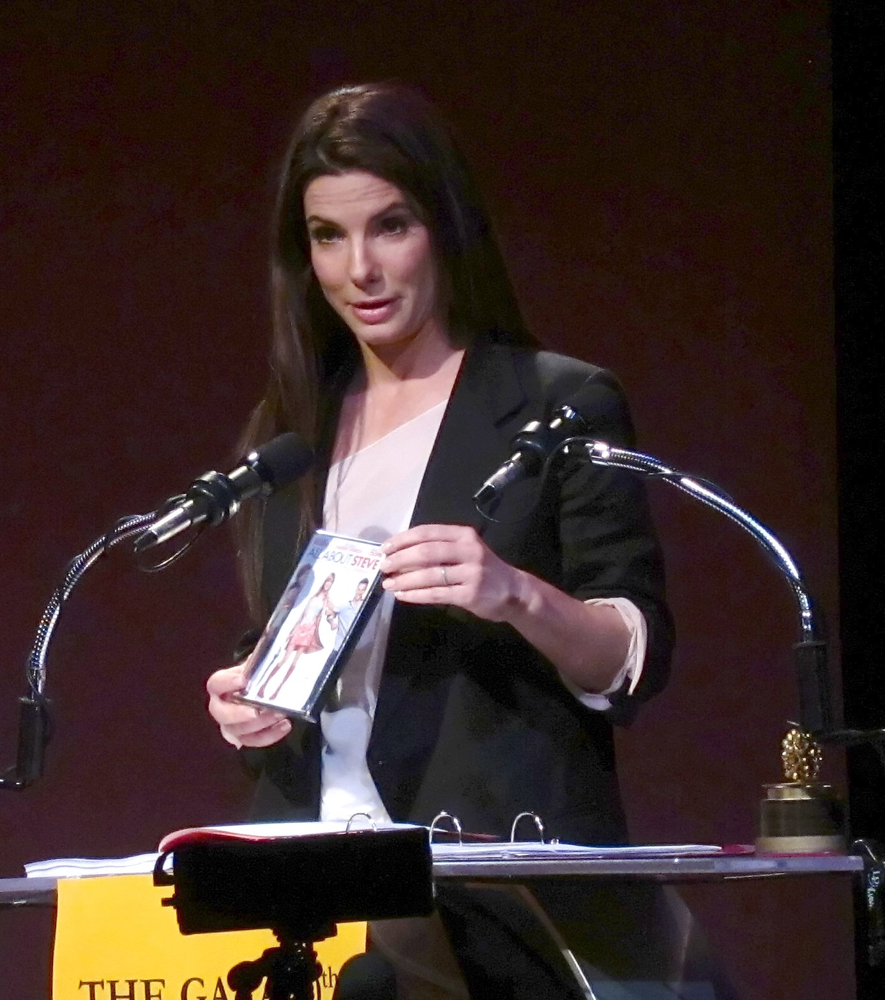
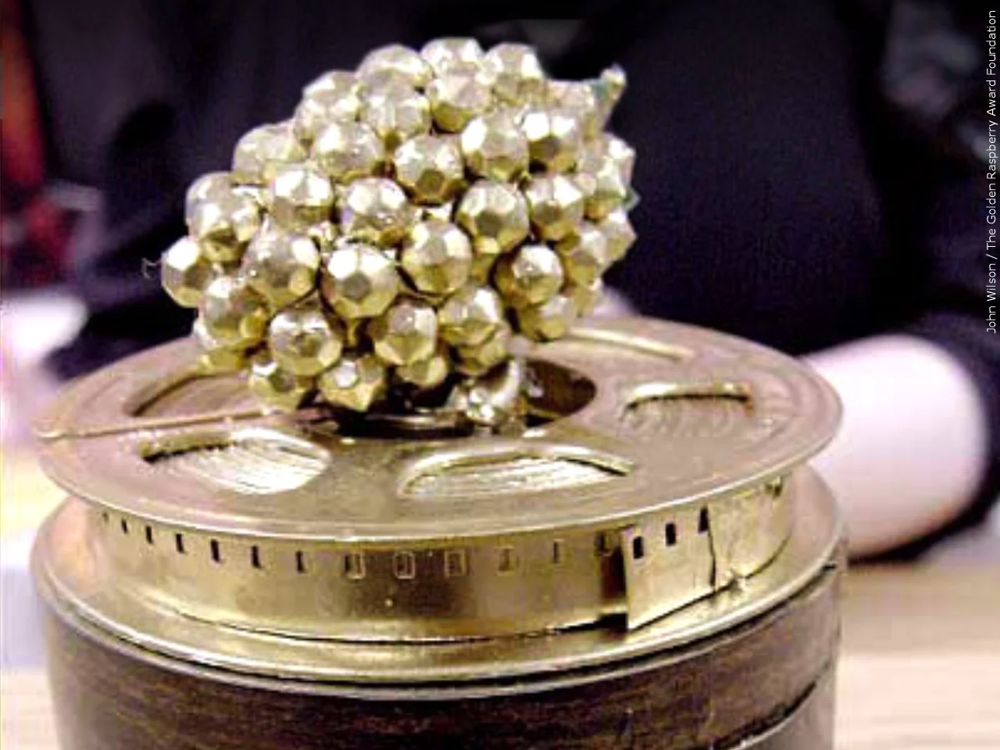
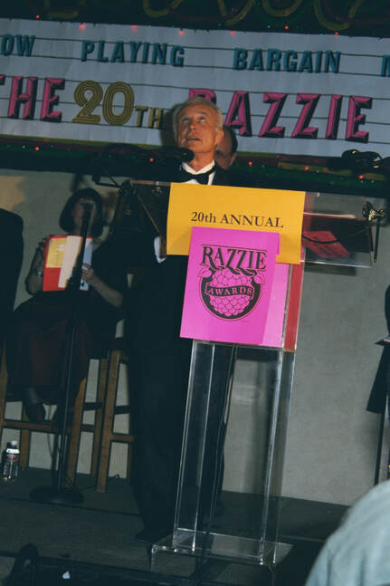
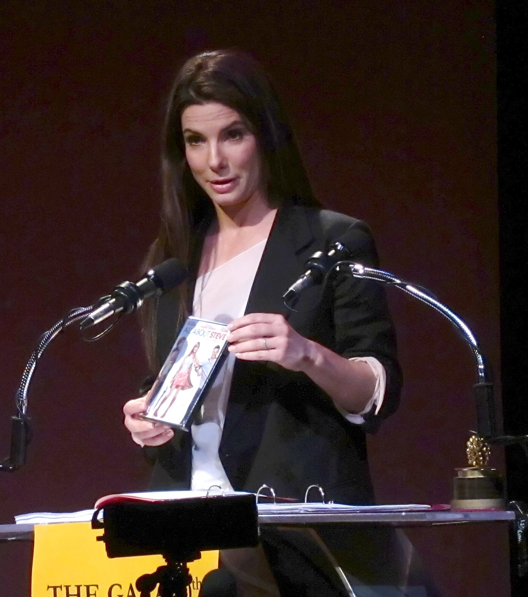
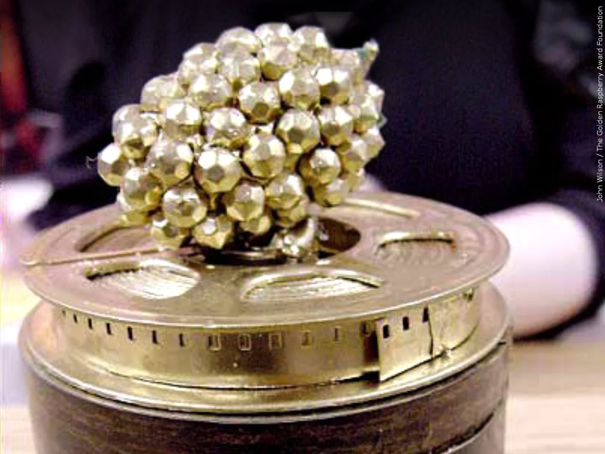
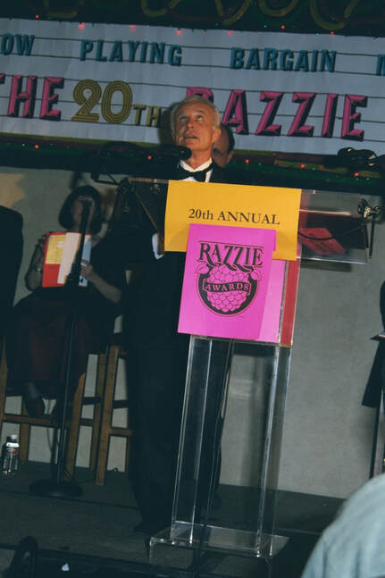
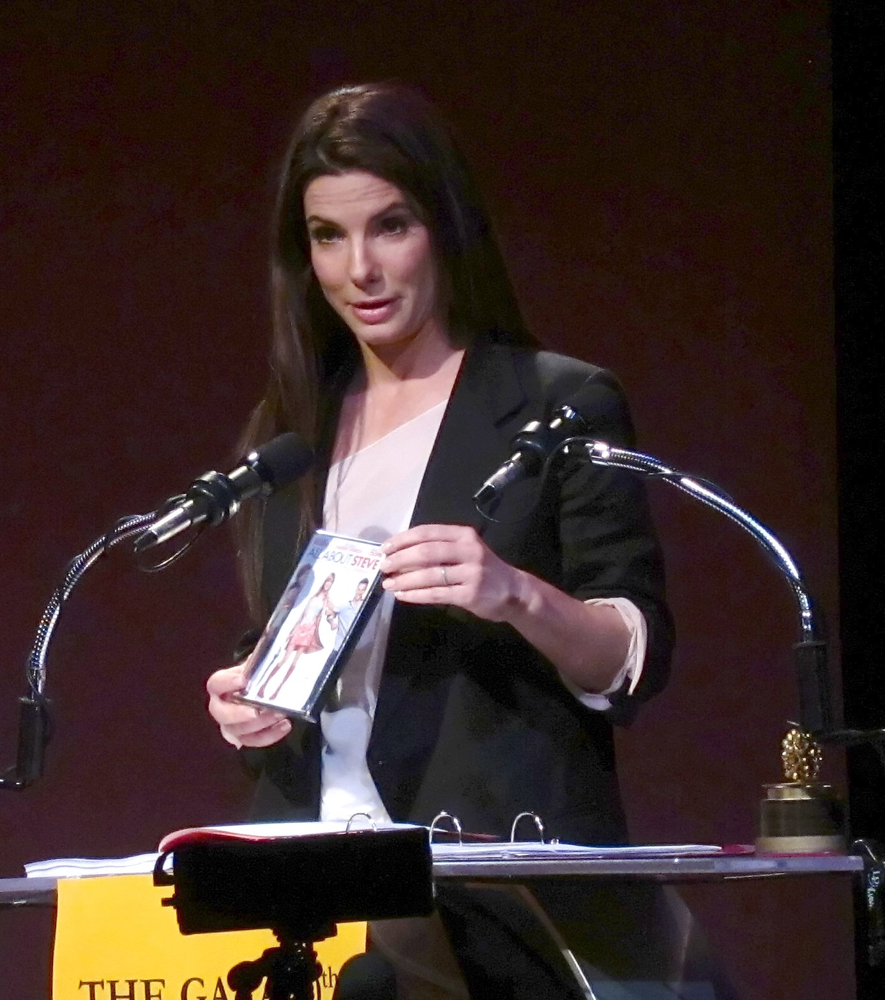
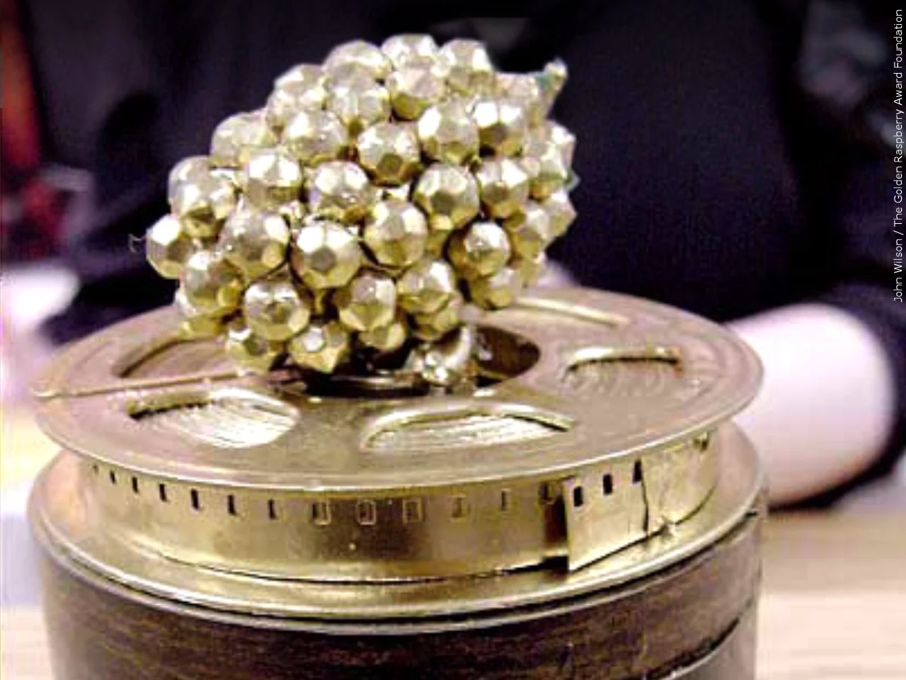
Źródła zdjęć
- Autorstwa Par Lance - DSC06954, CC BY-SA 2.0
- Zdjęcie ze strony UPI
- Zdjęcie ze strony Edinburgh News (poprzez Getty Images)
- Zdjęcie ze strony głównej Złotych Malin
- By Sandra_Bullock_at_2010_Razzies.jpg: Shari B. Ellisderivative work: Tabercil (talk) - Sandra_Bullock_at_2010_Razzies.jpg, CC BY-SA 2.0
- Zdjęcie: John Wilson/Fundacja Nagrody Złotej Maliny/MGN